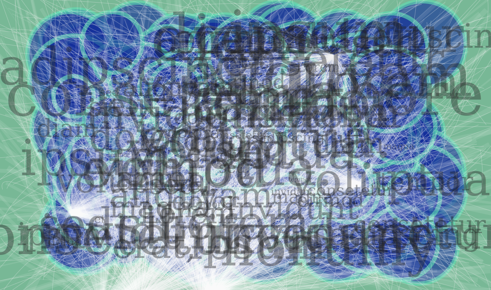

Artikel 1
Bij het <article> element zijn het individuele blokken content.
Maar visueel lijken het <article> element en het <section> element het zelfde
| Element | Uitleg | Demonstratie | |||||||||||||||||||||
|---|---|---|---|---|---|---|---|---|---|---|---|---|---|---|---|---|---|---|---|---|---|---|---|
| Les 1 - Inleiding HTML | |||||||||||||||||||||||
| <html> | Hiermee kun je een HTML document aanmaken | n.v.t. | |||||||||||||||||||||
| <head> | Hier plaats je alle informatie over de pagina | n.v.t. | |||||||||||||||||||||
| <body> | Hier plaats je de feitelijke content van de pagina | n.v.t. | |||||||||||||||||||||
| <title> | Wordt gebruikt om je pagina een titel te geven (voor het tabblad) | (zie tabblad) | |||||||||||||||||||||
| <p> | Hiermee kun je een paragraaf aanmaken | Dit is een paragraaf. |
|||||||||||||||||||||
| <br> | Om een nieuwe regel te beginnen | Nieuwe regel beginnen. |
|||||||||||||||||||||
| <strong> | Hiermee kun je tekst als belangrijk markeren | dit is belangrijk. | |||||||||||||||||||||
| <em> | Hiermee kun je tekst als benadrukt markeren | dit is benadrukt. | |||||||||||||||||||||
| Les 2 - Teksten | |||||||||||||||||||||||
| <meta> | Hier kun je metagegevens plaatsen (vooral voor SEO) | n.v.t. | |||||||||||||||||||||
| <h1> t/m <h6> | Met deze elementen kun je headings (kopjes) maken | Dit is een h3-heading |
|||||||||||||||||||||
| <del> | Hiermee defineer je deleted text in een document | Dit is een |
|||||||||||||||||||||
| <ins> | Hiermee markeer je inserted tekst | deze markup is inserted. | |||||||||||||||||||||
| <sup> | Hiermee markeer je tekst als superscript | Een veel gebruikt voorbeeld is het trademarktm superscript. | |||||||||||||||||||||
| <sub> | hiermee markeer je tekst als subscript | dit zie je vooral in scheikundige formules zoals CaCO4. | |||||||||||||||||||||
| <q> | Hiermee markeer je een stuk tekst als een (korte) quote | Dit is een korte voorbeeld-Mika |
|||||||||||||||||||||
| <blockquote> | Hiermee markeer je een stuk tekst als een (lange) quote | Dit is een langere voorbeeld omdat dit element-Mika |
|||||||||||||||||||||
| <abbr> | Hiermee markeer je een afkorting | Of een acroniem zoals WHO. | |||||||||||||||||||||
| Les 3 - Lijsten | |||||||||||||||||||||||
| <ul> | Hiermee kan je een unordered list maken |
|
|||||||||||||||||||||
| <ol> | Hiermee kan je een ordererd list maken |
|
|||||||||||||||||||||
| <dl> | Hiermee maak je een description list |
|
|||||||||||||||||||||
| Les 4 - Hyperlinks | |||||||||||||||||||||||
| <a> | Met dit element maken wij een hyperlink | Dit is een hyperlink | |||||||||||||||||||||
| <iframe> | Hiermee maak je een inline frame | ||||||||||||||||||||||
| Les 5 - Afbeeldingen | |||||||||||||||||||||||
| <img> | Met dit element kun je een image inn je webpage zetten |  | |||||||||||||||||||||
| <Link> | Met dit element kun je een connectie tussen deze folder en een andere maken. Dit wordt vaak gebruikt om external style sheets of een favicon te linken |
Als je naar de top van de webpagina kijkt zou er nu een Favicon bij moeten staan |
|||||||||||||||||||||
| <map> | Dit element wordt gebruikt om een 'image map' aan te wijzen | ||||||||||||||||||||||
| <area> | met dit element definieert een gebied in een image map | ||||||||||||||||||||||
| <object> | Met dit element defineer je een container voor een externe resource | ||||||||||||||||||||||
| Les 6 - Tabellen | |||||||||||||||||||||||
| <table> | Met dit element kun je het begin van een tabel maken. maar een tabel bestaat uit meerdere elementen dus <table> alleen doet weinig |
||||||||||||||||||||||
| <tr> | Dit element definieert een rij in een tabel maar net zoals <table> doet niet veel alleen |
||||||||||||||||||||||
| <td> | Dit element definieert een standaard data cel in een HTML tabel |
|
|||||||||||||||||||||
| <th> | Dit element definieert een header cell in een HTML tabel |
|
|||||||||||||||||||||
| <style> | Dit element defineer style informatie (Wat onder CSS valt) in een document | n.v.t. | |||||||||||||||||||||
| <Caption> | Met dit element kun je een bijschrift toevoegen aan je tabel |
|
|||||||||||||||||||||
| <colspan> | Met dit attribuut kun je één cel meerdere kolommen (columns) lang maken |
| |||||||||||||||||||||
| <rowspan> | Met dit attribuut kun je één cel meerdere rijen (rows) lang maken |
| |||||||||||||||||||||
| <thead> | Dit element wordt gebruikt om header content de groupen | n.v.t. | |||||||||||||||||||||
| <tbody> | Dit element wordt gebruikt om body content de groupen | n.v.t. | |||||||||||||||||||||
| <tfoot> | Dit element wordt gebruikt om footer content de groupen | n.v.t. | |||||||||||||||||||||
| Les 7 - Metagegevens | |||||||||||||||||||||||
| <charset> | Met dit element vertel je de website welke "character set" te gebruiken | Dit is moeilijk om te demonstreren omdat het altijd in de <head> staat zodat het voor de hele pagina telt (dit is altijd nodig) | |||||||||||||||||||||
| <script> | Dit element wordt gebruikt om een (client-side) (java)script te 'embedden' | Als u dit ziet dan is er iets misgegaan met de script |
|||||||||||||||||||||
| Les 8 - Formulieren | |||||||||||||||||||||||
| <form> | Dit element wordt gebruikt een HTML formulier te maken | ||||||||||||||||||||||
| <input> | Dit element maakt een input field waar een geburiker data kan invoeren | ||||||||||||||||||||||
| <label> | dit element definieert een label voor andere elmenten | |
|||||||||||||||||||||
| <select> | Dit element wordt gebruikt om een drop-down list te maken | Net zoals <table> en <form> doet het niet veel alleen | |||||||||||||||||||||
| <option> | Dit element definieert een optie en een <select> lijst | ||||||||||||||||||||||
| <optgroup> | Dit element wordt gebruikt om gerelateerde opties in groupen te zetten in een select lijst | ||||||||||||||||||||||
| Les 9 - Media | |||||||||||||||||||||||
| <source> | Dit element wordt gebruikt om meerdere mediabronnen voor media-elementen op te geven | alleen doet <source> niks maar zonder source zouden media elementen niet goed werken (zoals audio en video) zonder een <source> voor de video/audio file gebeurt er niks |
|||||||||||||||||||||
| <audio> | Dit element wordt gebruikt om audio te embedden op je pagina | ||||||||||||||||||||||
| <video> | Dit element wordt gebruikt om video te embedden op je pagina | ||||||||||||||||||||||
| <embed> | Dit element definieert een container voor een externe bron Zoals images videos en tekst in de vorm van een html snippet |
||||||||||||||||||||||
| <canvas> | Dit element wordt gebruikt om afbeeldingen te tekenen via scripting (in dit geval een vierkant) |
||||||||||||||||||||||
| Les 10 - Divisies | |||||||||||||||||||||||
| <div> | Dit element definieert een divisie of sectie in een HTML document | n.v.t. | |||||||||||||||||||||
| <header> | Hiermee maak je de header die vaak een logo, een visueel aantrekkelijke banner en/of functionele elementen (voor navigatie) heeft |
n.v.t. | |||||||||||||||||||||
| <footer> | Dit element gebruik je voor de afsluiting van je pagina | n.v.t. | |||||||||||||||||||||
| <nav> | Dit element gebruik je voor de primaire navigatie van een website (element gebruik je voor de primaire navigatie van een website) |
n.v.t. | |||||||||||||||||||||
| <section> | Dit element gebruik je wanneer meerdere blokken content samen deel uitmaken van een groter geheel |
sectie 1sectie-1 en sectie-2 zijn beide stukken van een groter geheel sectie 2omdat de twee secties deel van een geheel zijn wordt het <section> element gebruikt |
|||||||||||||||||||||
| <article> | Dit element gebruik je voor meerdere individuele blokken van content | Artikel 1Bij het <article> element zijn het individuele blokken content. Artikel 2Dit is een individueel blok tekst dat niets met het andere artikel te maken heeft |
|||||||||||||||||||||
| <aside> | Dit element gebruik je voor ondersteunende content die niet (of indirect) te maken heeft met de rest van de content |
Het demonstratie tekst:Ik ben bijna bij het einde van dit opdracht. |
|||||||||||||||||||||
| <figure> | Dit element geldt ook als een onderverdeling van je content | maar <figure> markeert alleen waar content gaat en kan zelf geen images laten zien (dus heb ik hiervoor een <img> gebruikt) |
|||||||||||||||||||||
| <figcaption> | Met dit element maak je een korte bijschrift (caption) over het <figure> element | ||||||||||||||||||||||